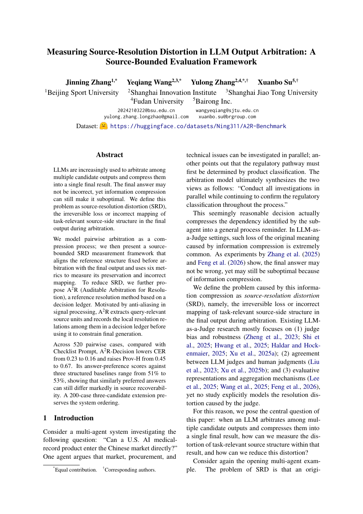

Query
Can a U.S. AI medical-record product enter the Chinese market directly?
When an LLM merges several candidate answers into one, the result can read well and still drop a conflict between the sources or detach a condition from the claim it limits. The paper calls this source-resolution distortion, fixes the source structure of every case before arbitration, and measures how much of it survives.
A2R-Decision has the model read the candidates into claims and stances, then writes the answer from that reading, so every claim keeps its sources and conditions.
1 Beijing Sport University · 2 Shanghai Innovation Institute · 3 Shanghai Jiao Tong University · 4 Fudan University · 5 Bairong Inc.
Order A, B and order B, A give the same reading: A1 and B1 each state a claim of their own, with no condition and no alternatives. Distance between the readings: 0.
A1, B1 additive, merge
Candidate A holds that market, procurement, and technical checks can proceed in parallel. Candidate B holds that product classification must precede selection of the regulatory pathway.
The paper opens with a multi-agent example. Two agents answer a market-entry question, and an LLM merges their answers.
The merged answer is a sensible instruction, but the prerequisite stated by one agent is no longer in it.
Can a U.S. AI medical-record product enter the Chinese market directly?
Market, procurement, and technical checks can proceed in parallel.
Product classification must precede selection of the regulatory pathway.
Conduct all investigations in parallel while continuing to confirm the regulatory classification.
Product classification and the regulatory pathway both appear in the merged answer, but the dependency between them does not. Candidate B said that the classification determines the pathway; the merged answer only asks to keep confirming the classification while all investigations run in parallel.
The model has one task: reading the candidates into claims and stances. Relations, the choice between readings and the final wording are computed from the readings.
The paper describes SRD in the vocabulary of source separation: misattribution is cross-source leakage, an unsupported addition is an artifact, and a lost relation is structural aliasing. A2R-Decision writes the answer as an informed mixture. For every claim it states which sources hold it and which deny it, so a reader can recover the source structure from the answer alone.
A reading R lists the claims the units make, each unit's stance on them (for or against, possibly under a condition) and the claims that are alternative answers. Two readings of a case are compared by d, the number of unit pairs they relate differently. A2R-Decision returns
π ranges over the cyclic orders in which the candidates Y can be presented.
The query and each candidate are split into numbered sentences (Q1, A1, B2, ...). One prompt asks for the claims, each unit's stances and the groups of alternative claims. A reading that fails validation is sent back once with the list of problems.
R = (claims, stances, alternatives)
The relation of every pair of units follows from their stances, in the paper's vocabulary. All relations come from one set of stances, so they cannot contradict each other.
rel(u, v) = f(stances(u), stances(v))
The candidates are read once in each cyclic order, and the reading with the smallest total distance to the others is kept. Ties go to alphabetical order, so the answer does not depend on how the candidates were supplied.
R̂ = argminR Σπ d(R, Rπ)
Each claim becomes one sentence that names the sources holding or denying it, with the condition of each stance. Alternative claims follow one another, introduced by "Alternatively". Readings that differ in which candidate holds or denies a claim, or under which condition, are never written alike.
y = W(R̂)
conflict, conditionOne unit counts against a claim the other counts for, or the two support different alternatives, and every such clash holds only under a condition.conflict, report_unresolvedThe same, with at least one unconditional clash. Both positions are reported and no side is chosen.equivalent, mergeThe two units take the same stances. The claim is written once and names both sources.subsumes or additiveThe stances of one unit include those of the other, or the units concern different claims. The operation is condition if a shared claim carries a condition, and merge otherwise.query_invalid, dropA unit with no stance under the query is left out of the answer.Case pair_controlled_conflict_heavy_000. Candidate A: "The primary latency metric improves by 3.1 percentage points. If refund rate rises by more than 2.0 percentage points, do not ship." Candidate B: "Ship because the primary latency metric improved significantly. The refund rate increase may be seasonal noise."
Both orders give the same reading. A2 and B1 are in conflict only under A's condition, so the operation is condition.
Candidate B holds that the team should ship the API gateway migration batch 1 next week. Alternatively, Candidate A holds that the team should not ship the API gateway migration batch 1 next week if refund rate rises by more than 2.0 percentage points. Candidate A holds that the primary latency metric improves by 3.1 percentage points. Candidate B holds that the primary latency metric improved significantly. Candidate B holds that the refund rate increase may be seasonal noise.
The main evaluation uses 520 pairwise cases, 320 controlled and 200 natural, whose source structures were fixed before any system was run.
Final-only and final-plus-trace outputs are scored separately. The metrics measure whether the source structure can be recovered from the output; whether the candidates' content is factually correct is a separate question.
Whether the query-relevant units of the candidates are kept.
Whether relations, provenance and caveat attachments in the trace match the reference.
Whether the final answer keeps the structure and source links of the trace.
CER and Prov-H are the primary metrics. FCR, UAR and CPR serve as safety diagnostics. RF* is used only for mechanism analysis, because its relation labels have lower annotator agreement.
A2R-Decision reaches CER 0.16 and Prov-H 0.67, against 0.23 and 0.45 for Checklist Prompt, at 1.44 times its token cost. In answer preference it is close to parity with the structured baselines (51–53%), so answers that are preferred about equally can still differ in how much source structure they keep.
The repository contains A2R-Decision as a Python package with a command-line runner for JSONL files.
The package holds the reading prompt, the validation of readings, the relation rules, the selection of the centrotype and the writer. It needs only the standard library of Python 3.9 or newer; an OpenAI-compatible client is optional. Benchmark scoring is not part of the package.
python3 -m pip install -e ".[openai]" python3 -m a2r --input cases.jsonl --output results.jsonl --model MODEL_NAME
Each input line holds a query and the candidates. The output keeps the input fields and adds an arbitration record with the answer, the selected reading and the reading for each order.
Each case has a gold source structure (units, query-conditioned relations, expected provenance, caveats and unsupported-claim traps) that was fixed before any system output was seen.
The release contains no annotator identities, raw annotator logs, account metadata or identifying free-text notes.

Measuring Source-Resolution Distortion in LLM Output Arbitration
Jinning Zhang, Yeqiang Wang, Yulong Zhang and Xuanbo Su. EMNLP 2026.
@inproceedings{zhang2026a2r,
title = {Measuring Source-Resolution Distortion in LLM Output Arbitration: A Source-Bounded Evaluation Framework},
author = {Zhang, Jinning and Wang, Yeqiang and Zhang, Yulong and Su, Xuanbo},
booktitle = {Proceedings of EMNLP},
year = {2026}
}